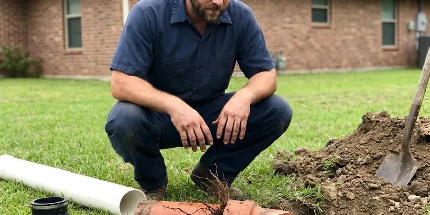

Foundation Leak Repair in Valley City, ND
A slow leak under the slab often runs for months before anyone sees it. HPN Plumbing finds it with acoustic gear and repairs or reroutes the line in Valley City, ND.
- Spot Repairs Through Concrete
- Quick Leak Locating
- Acoustic and Thermal Locating
- PEX Reroutes Overhead

Need Foundation Leak Repair in Valley City, ND?
Call HPN Plumbing and we will test each line and tell you which one is leaking.
Accurate Foundation Leak Repair in Valley City, ND for Water and Drain Lines
HPN Plumbing locates and repairs the water and drain leaks under concrete slabs that people call slab leaks. We isolate each line, then listen for it. A ground microphone and a pressure gauge tell us where to cut in Valley City, so the opening in your floor is about the size of a doormat.
Our expertise includes:
- Clean concrete cuts with compacted backfill
- Repairing copper and PEX lines correctly
- Rerouting water lines overhead or through walls to bypass the foundation

Additional Plumbing Repair Services in Valley City, ND
We offer expert plumbing repair services across Valley City, ND to fix leaks, restore flow, and keep your system running smoothly.


Customers
Why Choose HPN Plumbing for Foundation Leak Repair in Valley City, ND?
A clamp on a leaking pipe buys time, not a repair. We replace the damaged length or reroute the line, and if the pipe has more pinholes coming, we tell you so.
- Structure Aware, We look for signs of structural damage and bring in a structural engineer when it's warranted.
- Camera and Radar, We run a sewer camera on drain lines and scan concrete with ground-penetrating radar before any cut.
- Patch Work Done Right, Openings are backfilled, compacted in lifts and patched with a concrete mix that won't pull away from the edges.
Citywide Coverage
We repair foundation leaks in homes throughout Valley City, from older slab-on-grade houses to newer post-tensioned foundations. Most locating visits happen within a day. Once you choose a repair, it goes on the calendar quickly, often the next morning if it needs a longer block.
Experienced Team
Several of our plumbers specialize in post-tension slabs, stem wall foundations and raised floors. They read radar scans. Knowing how to spot a tendon or a grade beam on the scan screen before cutting is what keeps a simple leak repair from turning into a structural problem.
Safety-First Approach
Cutting a slab means dust, noise and a saw blade near buried lines. The saw runs wet. Before the blade touches concrete, we scan for cables, rebar and electrical conduit and set up the area so the floor and the crew both come through fine. Valley City code applies throughout.
Trusted Certified Valley City Plumbing Services Professionals
At HPN Plumbing, we are proud to offer certified plumbing services throughout Valley City, ND. Those papers on the wall mean something. Our plumbers hold recognized industry credentials, and they follow strict safety and quality rules on every repair, installation and maintenance call we run.
Call Us Now PHCC Plumbing Contractor Recognition
PHCC Plumbing Contractor Recognition Better Business Bureau (BBB) Accreditation
Better Business Bureau (BBB) Accreditation Angi Certified Pro
Angi Certified Pro ISO 9001 Quality Management Certification
ISO 9001 Quality Management CertificationFinding and Repairing Foundation Leaks in Valley City, ND
Residential Foundation Leak Repair in Valley City, ND
For a homeowner in Valley City, ND, the first question is usually how bad it is. A pressure test answers it. A fast drop on the gauge means a big leak that needs work soon, while a slow drop over twenty minutes points to a pinhole and gives you room to weigh options. We also look for the cause, corrosion, ground movement or a bad fitting.

Emergency Foundation Leak Repair in Valley City
A burst pipe under the slab can flood a room before you find the main valve. Find yours now. HPN Plumbing responds in Valley City to shut the line down, find the break and repair it on that first visit if we can get to it safely. A temporary cap gets the rest of your fixtures running again while we plan the fix.
Tunneling for Foundation Leaks in Valley City, ND
Tunneling means digging under the slab from outside the house. Your flooring stays put. We dig a pit beside the foundation and hand-tunnel to the leak, which works well when the break sits under cabinets, a tiled shower or hardwood you do not want torn up. HPN Plumbing backfills and compacts the tunnel when the Valley City, ND repair is done.
Same-Day Foundation Leak Response in Valley City, ND
A large leak under the slab can flood floors and soak the ground fast. Turn off the main. Over the phone we help you find the shutoff, then a crew locates the break and isolates that one line so the rest of the house keeps water.
PEX and PVC Foundation Leak Repair in Valley City
Newer houses use PEX or PVC under the slab. Plastic pipe fails too. Most failures we find are at a fitting that was crimped short or a joint that pulled apart when the soil moved, not in the pipe wall itself. HPN Plumbing replaces the fitting with a proper crimp, expansion or solvent-weld connection so the line under your Valley City foundation is sound again.
Foundation Leak Detection in Valley City
Locating comes before anything else. We split the system first. Each side gets its own pressure test, and once we know which side is losing water, we follow the pipe route with a tracer and listen along it with the ground mic until the sound peaks. Thermal imaging helps verify hot water leaks by showing warm spots on the floor.
Slab Leaks Under Commercial Buildings in Valley City
Commercial slabs carry more plumbing and more foot traffic than a house. The risks are the same. We locate and repair under-slab leaks while the business keeps running, and reroutes can be done after hours so customers never see the work crew or the drop cloths. Property owners and insurers receive a written report with photos.

Exterior Foundation Leak Solutions in Valley City
Not every wet foundation is a plumbing leak. Gutters cause plenty. When downspouts empty at the wall and the yard slopes toward the house, water builds up against the foundation and works into any crack. We fix grading, extend downspouts and install French drains around Valley City homes when needed.
Foundation Leak Repair Near You in Valley City, ND
We know the soil, the foundation types and the way homes here were built. It guides which repair we choose. Older slab-on-grade houses and newer post-tension slabs need different approaches, and knowing which one you have before we arrive saves time. Detection visits run one to three hours on most homes.
People searching for foundation leak repair near me usually have a warm floor, a damp spot or a high bill. We can be there quickly. Before we pack up, you will know where the leak is, what each repair would involve and what each would cost.
HPN Plumbing at a Glance
- Licensed and insured plumbers serving Valley City, ND
- 24/7 emergency service with same-day scheduling
- Upfront, flat-rate pricing before work begins
- 4.9-star rated by 408+ North Dakota customers
Valley City Map
Valley City Information
- Population
- 6,551
- Area codes
- Local
- Service area
- Valley City and communities within 40 miles
- Nearby
- Jamestown, West Fargo, Horace, Fargo
Basements are standard in most homes, and many rely on sump pumps to handle groundwater during wet springs. A pipe leaking under the slab keeps that soil wet in one spot, so a small leak in Valley City, ND can lead to cracked tile and a wall that drifts out of square if it runs for months.
Talk to a Plumber
Call HPN Plumbing for reliable plumbing work done by licensed pros in Valley City, ND.
Our Specialized Plumbing Services in Valley City, ND
At HPN Plumbing, you get every kind of plumbing service from one company across Valley City, ND. From leak detection to full system installs, our team works fast and charges fair prices on homes and commercial properties alike. Take a look at our core services below:


What to Expect From Foundation Leak Repair in Valley City, ND
We test the lines, find the leak and then repair it with as little cutting as we can manage.
Call or Book Online
Call (701) 403-1348 or use the online form, and tell us what you are seeing. We set a time for a tech to visit your Valley City property.
Locate the Leak
The tech isolates hot and cold lines, then uses a ground mic and thermal camera to pin down the break without tearing up floors.
Repair and Retest
You choose a spot repair, a reroute or a tunnel. We do the work to Valley City, ND code, then pressure test the line again before closing it up.
Frequently Asked Questions About Foundation Leak Repair in Valley City
Price swings with where the leak sits and what is on top of it. Flooring matters a lot. A spot repair through an open floor might run $800 to $2,500, while tunneling or a long reroute in Valley City, ND can reach $3,000 to $8,000 or more. We give a written number once the leak is found.
Probably not, and it isn't worth trying. The locating gear is expensive. You would need a ground mic, a pressure test rig, a concrete saw and the code knowledge to make joints under a slab that will hold for decades. A missed spot means a second hole in your Valley City floor.
A hairline crack in a basement wall can sometimes be sealed with a store-bought kit. Plumbing leaks are different. A poor repair can wet more soil and fail inspection, so pipe leaks and structural cracks belong with a licensed plumber or engineer.
Damp or warm floor spots, cracked tile, mildew under carpet and a meter that turns with every fixture off all point to it. A jump in the water bill is often the first sign.
Gutters and downspouts should carry water at least a few feet from the house. Grading matters too. Keep soil sloped away from the wall, fix erosion channels, keep moisture steady and have the plumbing tested for slow leaks now and then.
Yes, they can. Soil erodes under the slab. A leak left for months can wash out supporting soil, rot crawl space framing and rust rebar, and that structural repair dwarfs the plumbing bill. Catch it early.
A spot repair is often done in a few hours. Reroutes take longer. For a reroute or a tunnel, plan on one to three days, depending on line length and what is in the way. Your Valley City tech will give you a closer estimate.
Bigger jobs often do. Small fixes usually don't. Under local code in Valley City, ND, a repipe, structural change or large excavation usually calls for a permit, which we check, file and schedule for you.
Hear From Customers Who Hired Our Plumbing Experts

Diane F.
My kitchen faucet had dripped for months and I finally got tired of hearing it at night. HPN Plumbing came out the next morning, replaced the cartridge and the O rings, and tightened a loose base that was letting water under the sink.
Faucet Repair · Wahpeton, ND
Kevin O.
Before buying our house I paid for a sewer camera inspection. HPN Plumbing found a belly in the line that held standing water about forty feet from the cleanout. We used the video to get the sellers to fix it before closing.
Sewer Camera Inspection · Jamestown, NDKaren W.
After our third pinhole leak in copper, we stopped patching. HPN Plumbing gave us a written plan room by room and repiped the house in PEX while we stayed in it. The crew covered our floors every morning and cleaned up every night.
Repiping · West Fargo, NDRobert G.
The camera showed a full break in our clay sewer line near the street. HPN Plumbing replaced it with a trenchless pipe burst, so the only digging was two small pits in the yard. They let us watch the footage before and after.
Sewer Line Replacement · Fargo, ND
Daniel K.
A pipe burst in the garage ceiling at 11 at night. Someone answered on the second ring, and the plumber was in my driveway about fifty minutes later. He shut off the main, cut out the split section, and had water back on before 2 am.
Emergency Plumbing · West Fargo, NDCarlos V.
Our house still had galvanized pipe, and upstairs the shower was a trickle. The crew repiped everything in PEX over three days and patched every drywall hole before they left. The pressure difference is night and day.
Repiping · Grand Forks, ND